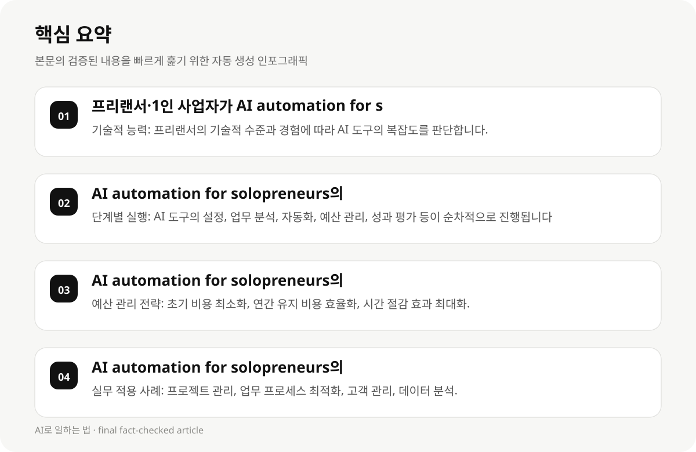

프리랜서·1인 사업자가 AI automation for solopreneurs를 선택할 때 고려해야 할 요소 #
프리랜서 및 1인 사업자가 AI automation for solopreneurs를 실제 업무에 적용할 때는 기술적 능력, 업무 유형, 예산 등 다양한 요소를 고려해야 합니다. 이 가이드는 이러한 요소들을 구체적으로 설명하며, 선택 기준을 정리합니다.
AI automation for solopreneurs는 업무 효율성 향상과 시간 절감을 목표로 합니다. 그러나 선택 시에는 기술적 지원, 예산 관리, 업무 유형에 따라 달라질 수 있습니다. 이 가이드는 이러한 요소들을 체계적으로 정리하여, 실무 적용 시의 결정 기준을 제시합니다.
- 기술적 능력: 프리랜서의 기술적 수준과 경험에 따라 AI 도구의 복잡도를 판단합니다.
- 업무 유형: 프로젝트 유형, 업무 규모, 업무 유연성에 따라 적합한 도구를 선택합니다.
- 예산 관리: AI 도구의 초기 비용, 연간 유지 비용, 시간 절감 효과 등을 고려하여 예산을 관리합니다.
AI automation for solopreneurs의 실행 단계 및 단계별 실행 방식 #
AI automation for solopreneurs의 실행 단계는 단계별 실행, 기술적 지원, 예산 관리 등이 포함됩니다. 이 가이드는 이러한 단계를 구체적으로 설명하며, 실제 업무에 적용할 수 있는 실행 방식을 제시합니다.
실행 단계는 다음과 같은 단계로 나누어집니다: 1) AI 도구 선택 및 설정, 2) 업무 프로세스 분석 및 자동화, 3) 기술적 지원 및 훈련, 4) 예산 관리 및 지속적인 개선, 5) 성과 평가 및 개선. 이 단계를 체계적으로 따라가면, 프리랜서의 업무 효율성을 높일 수 있습니다.
- 단계별 실행: AI 도구의 설정, 업무 분석, 자동화, 예산 관리, 성과 평가 등이 순차적으로 진행됩니다.
- 기술적 지원: AI 도구의 사용을 위한 훈련, 기술적 도움, 그리고 유지 관리가 필요합니다.
- 예산 관리: 초기 비용, 연간 유지 비용, 시간 절감 효과 등을 고려하여 예산을 관리합니다.
AI automation for solopreneurs의 예산 관리 및 기술적 지원 전략 #
AI automation for solopreneurs의 예산 관리는 초기 비용, 연간 유지 비용, 시간 절감 효과 등에 따라 달라질 수 있습니다. 이 가이드는 예산 관리 전략과 기술적 지원 방법을 구체적으로 설명하며, 프리랜서가 실제 업무에 적용할 수 있는 전략을 제시합니다.
예산 관리 전략은 다음과 같은 방향으로 접근할 수 있습니다: 1) 초기 비용을 최소화하여 도구를 선택하고, 2) 연간 유지 비용을 효율적으로 관리하고, 3) 시간 절감 효과를 최대화하여 예산을 절감합니다. 기술적 지원은 AI 도구의 사용을 위한 훈련, 기술적 도움, 그리고 유지 관리가 필요합니다.
- 예산 관리 전략: 초기 비용 최소화, 연간 유지 비용 효율화, 시간 절감 효과 최대화.
- 기술적 지원: AI 도구의 사용을 위한 훈련, 기술적 도움, 유지 관리.
- AI 도구 선택: 예산, 기술적 능력, 업무 유형에 맞춘 적합한 도구를 선택합니다.

AI automation for solopreneurs의 실무 적용 사례 및 성과 평가 #
AI automation for solopreneurs의 실무 적용 사례는 다음과 같습니다: 1) 프로젝트 관리 및 자동화, 2) 업무 프로세스 최적화, 3) 고객 관리 및 마케팅 자동화, 4) 데이터 분석 및 의사결정 지원. 이 가이드는 이러한 사례를 구체적으로 설명하며, 성과 평가 방법을 제시합니다.
성과 평가는 다음과 같은 방향으로 접근할 수 있습니다: 1) 업무 시간 절감 효과, 2) 업무 효율성 향상, 3) 고객 만족도 향상, 4) 예산 절감 효과. 이 평가를 통해 프리랜서는 AI 도구의 효과를 체계적으로 분석하고 개선할 수 있습니다.
- 실무 적용 사례: 프로젝트 관리, 업무 프로세스 최적화, 고객 관리, 데이터 분석.
- 성과 평가: 업무 시간 절감, 효율성 향상, 고객 만족도, 예산 절감.
AI automation for solopreneurs의 선택 기준 및 실무 적용 전략 #
AI automation for solopreneurs의 선택 기준은 기술적 능력, 업무 유형, 예산 등에 따라 달라질 수 있습니다. 이 가이드는 이러한 기준을 체계적으로 정리하며, 실무 적용 전략을 제시합니다.
실무 적용 전략은 다음과 같습니다: 1) AI 도구의 선택 및 설정, 2) 업무 프로세스 분석 및 자동화, 3) 기술적 지원 및 훈련, 4) 예산 관리 및 지속적인 개선, 5) 성과 평가 및 개선. 이 전략을 따라가면, 프리랜서는 AI automation for solopreneurs를 실제 업무에 효과적으로 적용할 수 있습니다.
- 선택 기준: 기술적 능력, 업무 유형, 예산.
- 실무 적용 전략: 도구 선택, 업무 분석, 기술 지원, 예산 관리, 성과 평가.